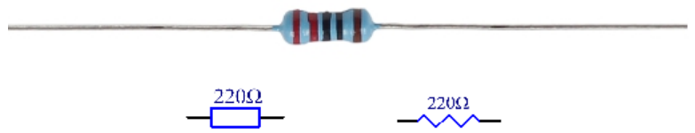
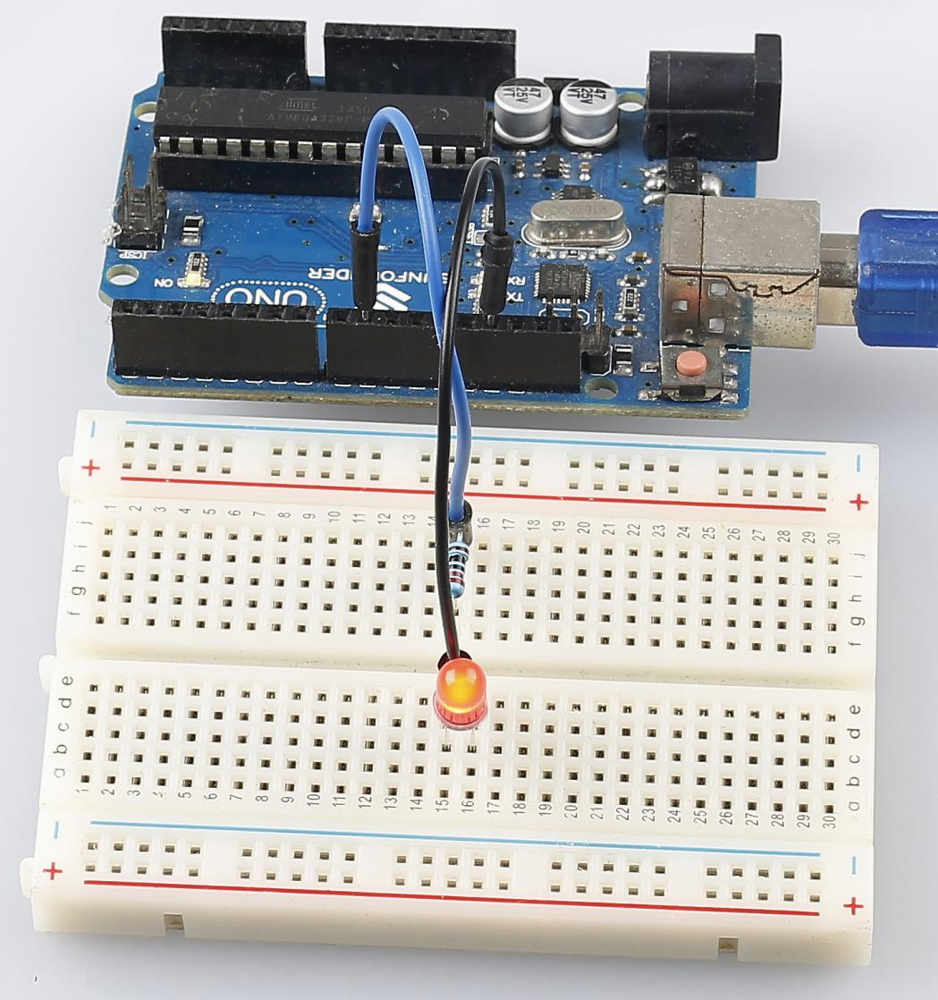

Lesson 2 Blinking LED¶
Introduction¶
You should’ve learnt how to install Arduino IDE and add libraries before. Now you can start with a simple experiment to learn the basic operation and code in the IDE.


Component Introduction¶
Breadboard
A breadboard is a construction base for prototyping of electronics. It is used to build and test circuits quickly before finalizing any circuit design. And it has many holes into which components like ICs and resistors as well as jumper wires mentioned above can be inserted. The breadboard allows you to easily plug in and remove components.
This is the internal structure of a full+ breadboard. Although there are holes on the breadboard, internally some of them are connected with metal strips.

Resistor
Resistor is an electronic element that can limit the branch current. A fixed resistor is one whose resistance cannot be changed, when that of a potentiometer or variable resistor can be adjusted.
The resistors in this kit are fixed ones. It is essential in the circuit to protect the connected components. The following pictures show a real 220Ω resistor and two generally used circuit symbols for resistor. Ω is the unit of resistance and the larger includes KΩ, MΩ, etc. Their relationship can be shown as follows: 1 MΩ=1000 KΩ, 1 KΩ = 1000 Ω, which means 1 MΩ = 1000,000 Ω = 10^6 Ω. Normally, the resistance is marked on it. So if you see these symbols in a circuit, it stands for a resistor.
{kind=link}
The resistance can be marked directly, in color code, and by character. The resistors offered in this kit are marked by different colors. Namely, the bands on the resistor indicate the resistance.
When using a resistor, we need to know its resistance first. Here are two methods: you can observe the bands on the resistor, or use a multimeter to measure the resistance. You are recommended to use the first method as it is more convenient and faster. If you are not sure about the value, use the multimeter.
As shown in the card, each color stands for a number.

LED
Semiconductor light-emitting diode is a type of component which can turn electric energy into light energy via PN junctions. By wavelength, it can be categorized into laser diode, infrared light-emitting diode and visible light-emitting diode which is usually known as light-emitting diode (LED).

Diode has unidirectional conductivity, so the current flow will be as the arrow indicates in figure circuit symbol. You can only provide the anode with a positive power and the cathode with a negative. Thus the LED will light up.
An LED has two pins. The longer one is the anode, and shorter one, the cathode. Pay attention not to connect them inversely. There is fixed forward voltage drop in the LED, so it cannot be connected with the circuit directly because the supply voltage can outweigh this drop and cause the LED to be burnt. The forward voltage of the red, yellow, and green LED is 1.8 V and that of the white one is 2.6 V. Most LEDs can withstand a maximum current of 20 mA, so we need to connect a current limiting resistor in series.
The formula of the resistance value is as follows:
R = (Vsupply – VD)/I
R stands for the resistance value of the current limiting resistor, Vsupply for voltage supply, VD for voltage drop and I for the working current of the LED.
If we provide 5 voltage for the red LED, the minimum resistance of the current limiting resistor should be: (5V-1.8v)/20mA = 160Ω. Therefore, you need a 160Ω or larger resistor to protect the LED. You are recommended to use the 220Ω resistor offered in the kit.
Jumper Wires
Wires that connect two terminals are called jumper wires. There are various kinds of jumper wires. Here we focus on those used in breadboard. Among others, they are used to transfer electrical signals from anywhere on the breadboard to the input/output pins of a microcontroller.
Jump wires are fitted by inserting their “end connectors” into the slots provided in the breadboard, beneath whose surface there are a few sets of parallel plates that connect the slots in groups of rows or columns depending on the area. The “end connectors” are inserted into the breadboard, without soldering, in the particular slots that need to be connected in the specific prototype.
There are three types of jumper wire: Female-to-Female, Male-to-Male, and Male-to-Female.

More than one type of them may be used in a project. The color of the jump wires is different but it doesn’t mean their function is different accordingly; it’s just designed so to better identify the connection between each circuit.
Principle:¶
Connect one end of the 220ohm resistor to pin 9 of the Uno and the other end to the anode (the long pin) of the LED, and the cathode (the short pin) of the LED to GND. When the pin 9 outputs high level, the current gets through the current limiting resistor to the anode of the LED. And since the cathode of the LED is connected to GND, the LED will light up. When pin 9 outputs low level, the LED goes out.
The schematic diagram:

Experimental Procedures¶
Step 1: Build the circuit (the pin with a curve is the anode of the LED).
Then plug the board into the computer with a 5V USB cable.

Step 2: Open the Lesson_2_Blinking_LED.ino code file in the path of electronic-kitfor-ArduinocodeLesson_2_Blinking_LED
Step 3: Select the Board and Port
Before uploading the code, you need to select the Board and Port. Click Tools ->Board and select Arduino/Genuino Uno.

Then select Tools ->Port. Your port should be different from mine.

Step 4: Upload the sketch to the Uno board.
Click the Upload icon to upload the code to the control board.

If “Done uploading” appears at the bottom of the window, it means the sketch has been successfully uploaded.

You should now see the LED blinking.
{kind=link}
Code¶
Code Analysis 2-1 Define variables¶
const int ledPin = 9; //the number of the LED pin
You should define every variable before using in case of making mistakes. This line defines a constant variable ledPin for the pin 9. In the following code, ledPin stands for pin 9. You can also directly use pin 9 instead.
Code Analysis 2-2 setup() function¶
A typical Arduino program consists of two subprograms: setup() for initialization and loop() which contains the main body of the program.
The setup() function is usually used to initialize the digital pins and set them as input or output as well as the baud rate of the serial communication.
The loop() function contains what the MCU will run circularly. It will not stop unless something happens like power outages.
void setup()
{
pinMode(ledPin,OUTPUT);//initialize the digital pin as an output
}
The setup() function here sets the ledPin as OUTPUT.
pinMode(Pin): Configures the specified pin to behave either as an input or an output.
The void before the setup means that this function will not return a value. Even when no pins need to be initialized, you still need this function. Otherwise there will be errors in compiling.
Code Analysis 2-3 loop function¶
void loop()
{
digitalWrite(ledPin,HIGH);//turn the LED on
delay(500); //wait for half a second
digitalWrite(ledPin,LOW); //turn the LED off
delay(500); //wait for half a second
}
This program is to set ledPin as HIGH to turn on the LED, with a delay of 500ms. Set ledPin as LOW to turn the LED off and also delay 500ms. The MCU will run this program repeatedly and you will see that the LED brightens for 500ms and then dims for 500ms. This on/off alternation will not stop until the control board runs out of energy.
digitWrite(Pin): Write a HIGH or a LOW value to a digital pin. When this pin has been set as output in pinModel(), its voltage will be set to the corresponding value: 5V (or 3.3V on 3.3V boards) for HIGH, 0V (ground) for LOW.
Experiment Summary¶
Through this experiment, you have learned how to turn on an LED. You can also change the blinking frequency of the LED by changing the num value in the delay function delay (num). For example, change it to delay (250) and you will find that the LED blinks more quickly.